Formato oficial de Pokémon competitivo en doubles: cada jugador trae 6 Pokémon, lleva 4 a batalla, y combate con 2 activos simultáneos. La Regulación I 2026 permite 2 restricteds, lo que abre el meta a Pokémon como Calyrex-Ice, Miraidon, Kyogre o Groudon.
Lo que hace VGC un problema "duro" para la IA:
Heurísticas simples (atacar al más débil, usar el move más fuerte) son derrotables sistemáticamente por humanos avanzados. La complejidad combinatoria + información parcial + horizonte temporal largo hacen que solo aprender desde datos (RL) escale a nivel competitivo. Nuestro proyecto compara dos enfoques RL distintos sobre la misma plataforma.
| Rango | Significado |
|---|---|
0 | Pass / no-op |
1–6 | Switch al Pokémon de equipo[N-1] |
7–86 | Move 1..4 + target (-2..+2) · 4 modos: base/mega/z/dyna |
87–106 | Move + target + Terastalize |
random → greedy → self → greedy → self → ...| Checkpoint | d4_zero_20260509 |
| Profundidad de entrenamiento | 4 |
| Iteraciones completadas | 10 / 60 |
| Decisiones offline | 9.371 |
| Updates PPO | 80 |
| Simulador | requerido durante rollouts |
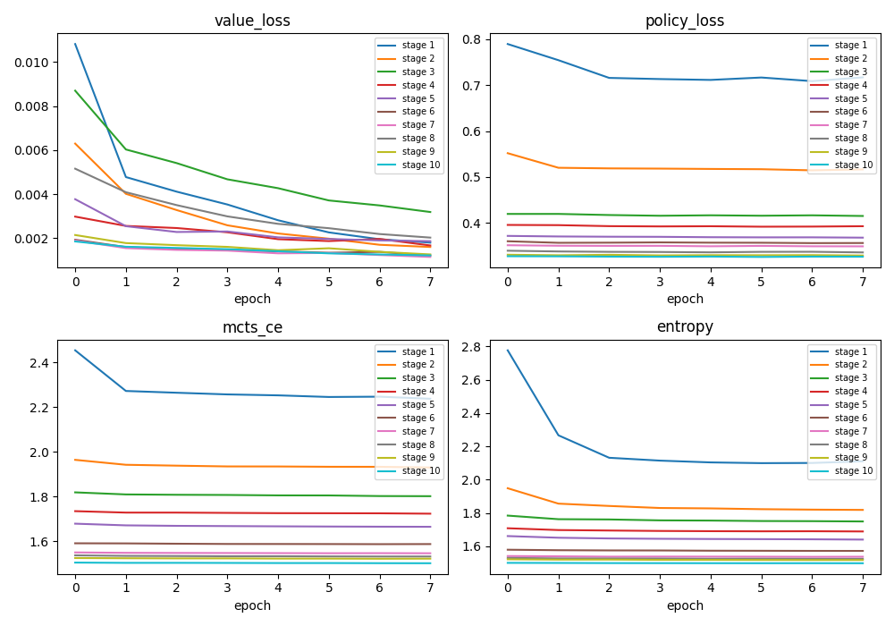
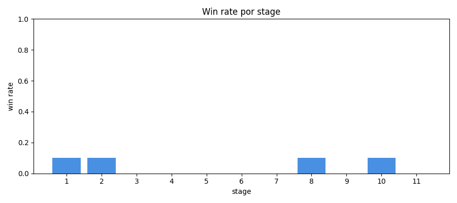
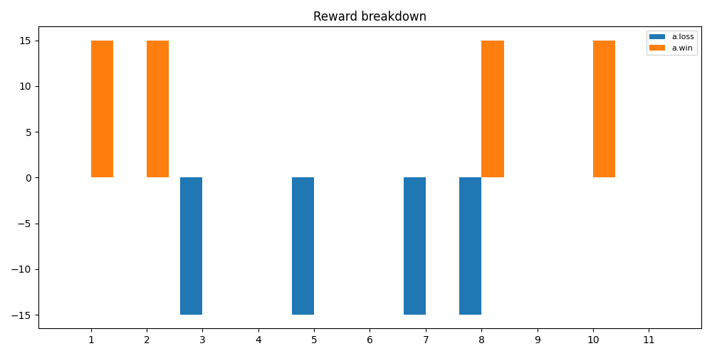
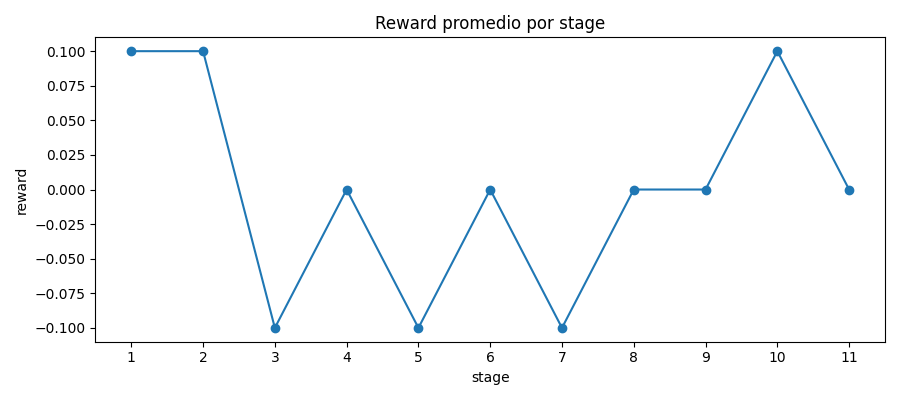
AlphaZero fue util como arquitectura de busqueda, pero el entrenamiento quedo limitado: solo completo 10 de 60 iteraciones y acumulo 92 draws. En el torneo no fue el peor: supero a CFR 22-8, pero perdio claramente contra PPO recurrente 7-23.
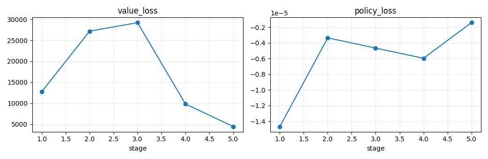
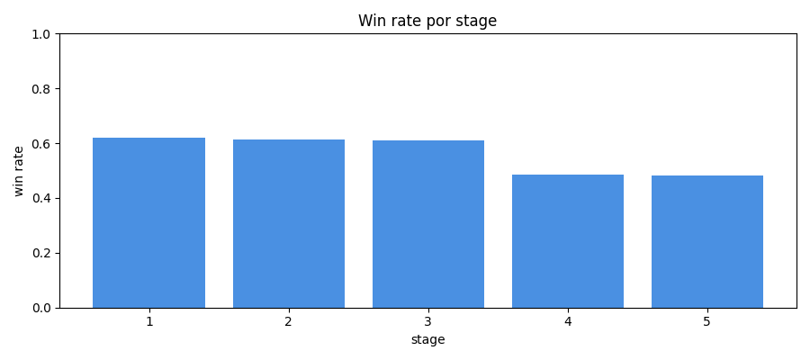
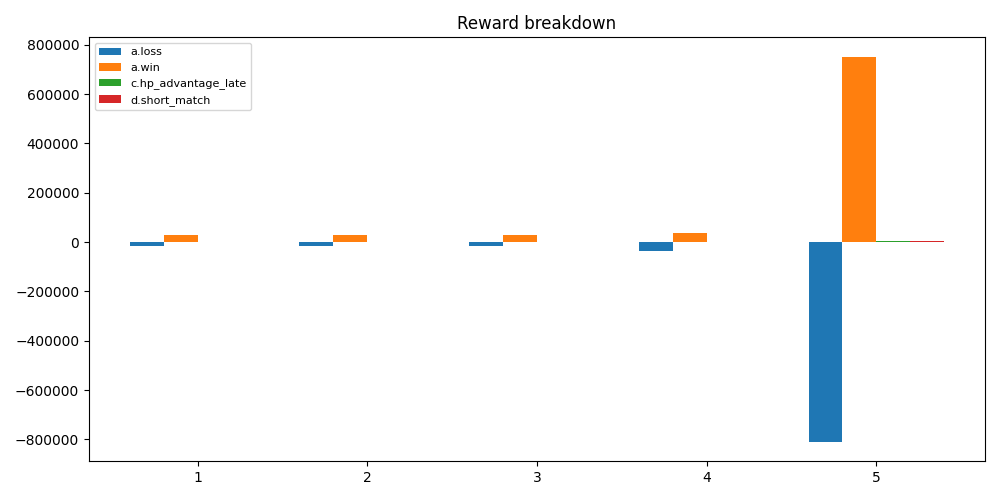
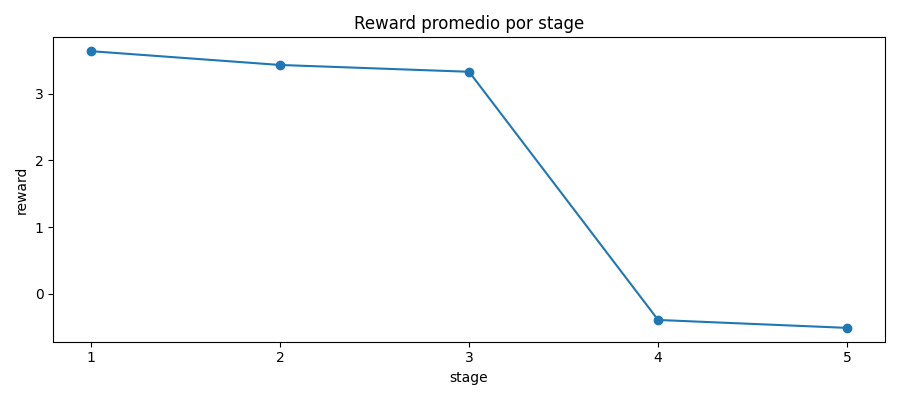
Aunque su win rate durante entrenamiento fue cercano al 50%, en evaluacion directa fue el modelo mas fuerte: gano 46 de 60 partidas, sin draws ni timeouts. La memoria recurrente parece haber ayudado mas que la planificacion profunda en este presupuesto de computo.
VGC tiene informacion imperfecta y acciones simultaneas. CFR acumula arrepentimiento por accion y construye una estrategia mixta. La red prior intenta generalizar esa tabla para no depender solo de estados ya visitados.
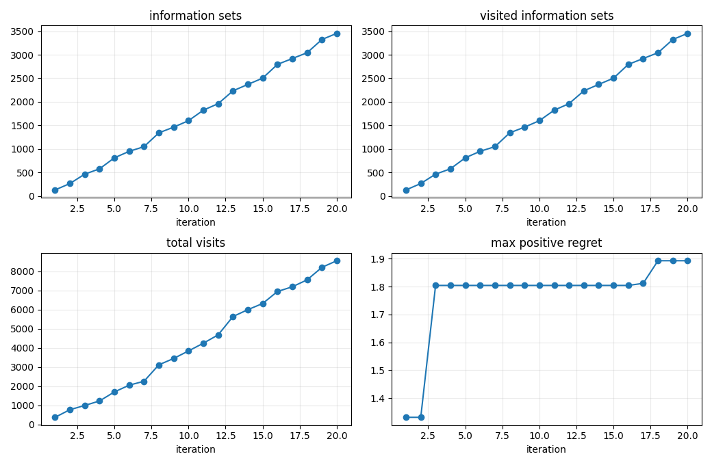
CFR mejoro mucho contra baselines de entrenamiento, pero no transfirio igual de bien al torneo entre modelos. Esto muestra que ganar al curriculum no equivale a ganar contra otros agentes aprendidos.
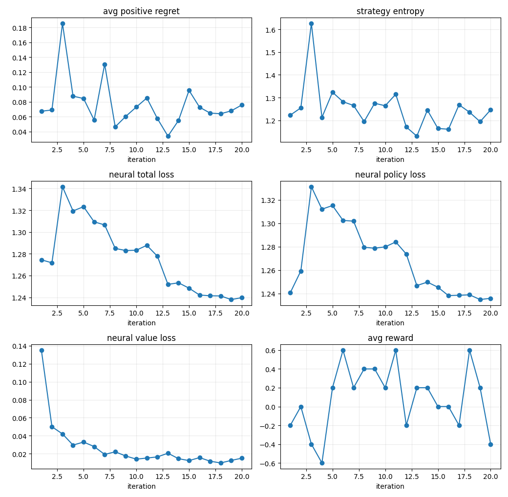
El reporte final de CFR es valido, pero el torneo revela sobreajuste al tipo de rivales del curriculum.
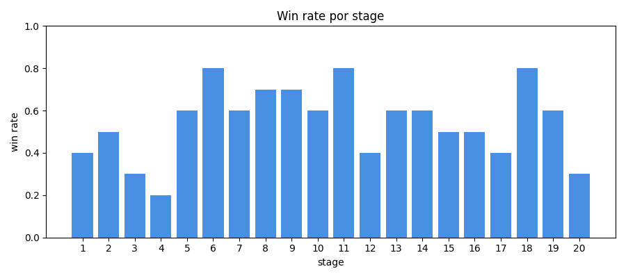
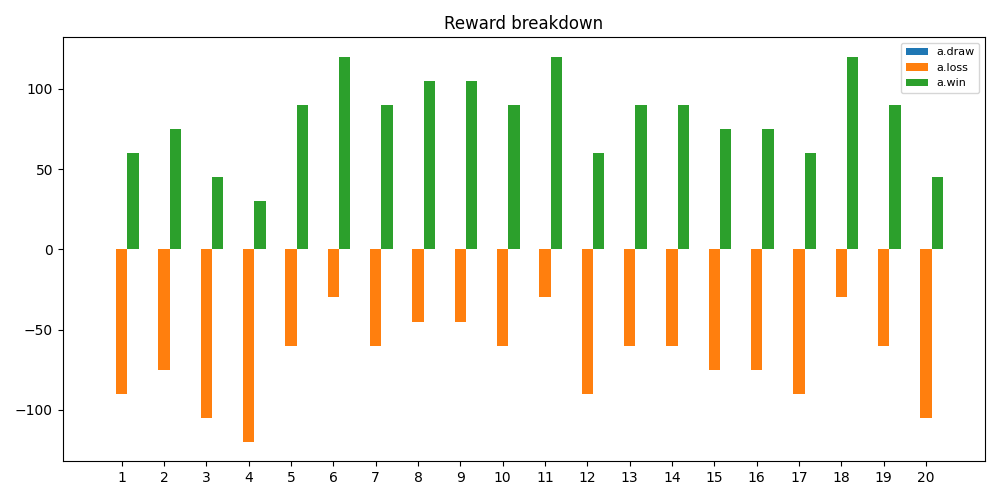
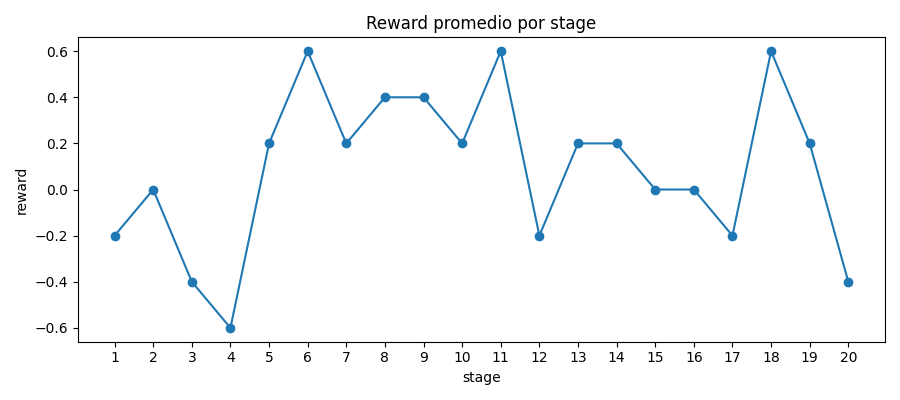
CFR dejo de producir draws falsos y aprendio una politica funcional. Pero con depth 2 y pocos candidatos, quedo corto contra politicas aprendidas mas agresivas: perdio 8-22 contra AlphaZero y 7-23 contra PPO.
PPO gano 46 de 60 y fue el unico con dominio claro contra ambos rivales.
| AlphaZero vs CFR | 22-8 AlphaZero |
| AlphaZero vs PPO | 23-7 PPO |
| CFR vs PPO | 23-7 PPO |
| Turnos promedio | 12.4 PPO · 13.2 AZ · 14.3 CFR |
La evaluacion head-to-head cambio la lectura: CFR parecia mejor mirando solo su reporte de entrenamiento, pero contra modelos aprendidos quedo tercero. El modelo mas robusto en juego directo fue PPO recurrente.
Mas torneos con semillas distintas y mismo presupuesto para todos.
Usar PPO como baseline fuerte y medirlo en ladder real.
Subir depth/candidatos y mejorar el prior para no perder contra agentes aprendidos.
Optimizar simulador o usar menos ramas para completar entrenamiento.
El proyecto dejo tres familias funcionales y comparables. La sorpresa fue que el modelo mas simple de ejecutar, PPO recurrente, termino ganando el torneo. CFR y AlphaZero siguen siendo valiosos como lineas de investigacion, pero necesitan mas presupuesto o mejor poda para superar al baseline recurrente.